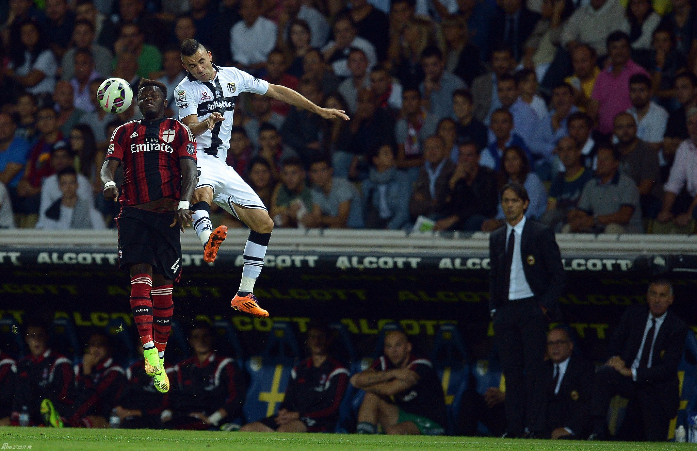
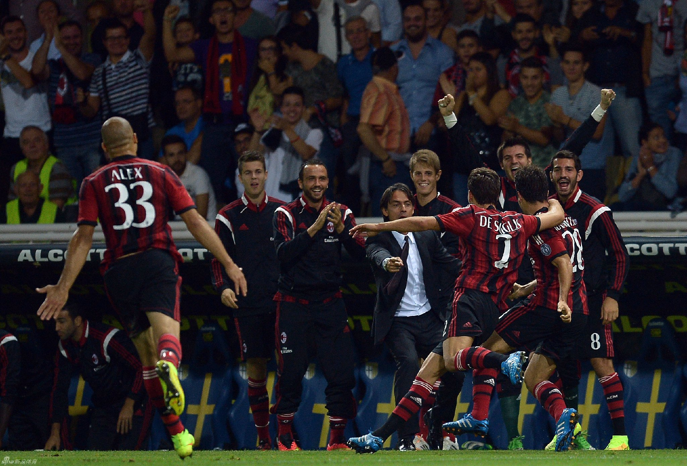
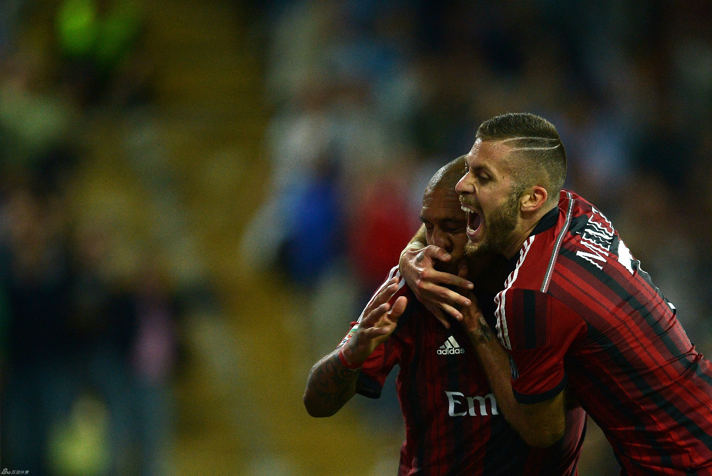
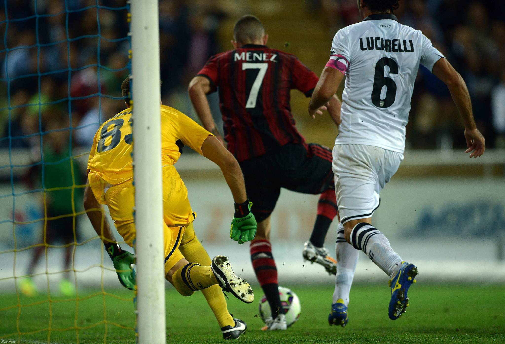

如果我没记错的话，我唯一在球场看过的一场球是2006年初在圣西罗球场，AC米兰4：3赢了帕尔马。那时候AC米兰还算处在巅峰期，几个月前刚刚在欧冠决赛中遭遇3:0被逆转的惨剧。转眼快八年了。怎料到AC米兰落得了今天这个样子。@意大利球迷俱乐部:#意甲新闻#【集锦：帕尔马4:5AC米兰】点球，红牌，奔袭，乌龙...九个进球，向九爷致敬进球视频-本田送隐蔽妙传 新援横趟巧射获处子球；进球视频-米兰禁区致命漏人 卡萨诺头槌闪电扳平；进球视频-本田灵动跑位造杀机 鱼跃冲顶砸球入网；进球视频-梅内突入禁区造点 亲自操刀暴力射中路；进球视频-禁区防守形同虚设 紫百合旧将抢射破米兰；进球视频-德容抢断卡萨诺 单刀奔袭推射一气呵成；进球视频-米兰惨遭角球空袭 帕尔马铁卫甩头破死角；进球视频-骚！梅内人球分过章鱼哥+脚后跟破空门；进球视频-德西利奥回传摆乌龙 章鱼哥狼狈扑空。  1次播放 00:53

 94030
94030